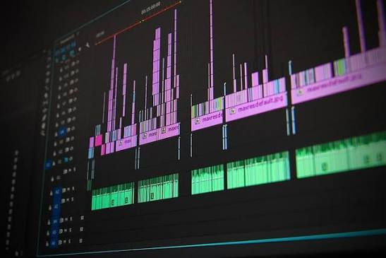
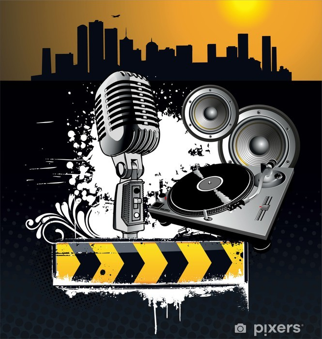

- Tech Enthuasist
- Fitness/Exercising Keeping yourself fit and in shape is probably the most important thing a human can do to ensure stability to their physical and even mental health, Ever since I was young I always loved running and trying to be the fastest I could be, I thought I could be a pro runner, That never happened but I still exercise and take care of my body as much as possible, Sometimes it can be hard to do it especially on certain circumstances however it will always stay in my head as a priority because my health is extremely important to me and others who care about me.
- Video Editing
- Music
 I've always been so interested in technology and how it works which led me to become a tech enthuasist, I'm always reading the latest news of technology and it's advancements, Especially for PCs, My passion for tech came from a young age when my family got their first computer and a Nintendo DS which I always used.
I've always been so interested in technology and how it works which led me to become a tech enthuasist, I'm always reading the latest news of technology and it's advancements, Especially for PCs, My passion for tech came from a young age when my family got their first computer and a Nintendo DS which I always used.

Again when I was young I developed a small passion for editing videos on my tablet, I eventually stopped in 2020 and evolved to more serious video editing on a computer using more technical software but in that same year, I started teaching my older brother how to edit as he wanted to pursue it professionally by starting a carrier on YouTube so he had to start somewhere, This ultimately reignited my passion for video editing but now I do it just for fun. Beforehand I did edit videos and upload them to YouTube but I now no longer do that as it's alot of pressure and I feel like pursuing other things in life. So now I make edits to make me smile or others smile.
One of my biggest hobbies is Music, I am a massive hip hop fan and I listen to multiple hip hop subgenres, For example Grime, Trap, and Boom Bap. There are so many artists I listen to but here are some that have recently stood out to me and or just all time favourites of mine: Skepta, Travis Scott, Esdeekid, Tupac, and Key Glock. I don't just listen to hip hop though, I'm also a big fan of Jamaican Dancehall and Reggae music especially the old school tracks. My love for music came from a young age as my family and the people around me listened to it and got me into liking music and since I am Jamaican, My family also loves Dancehall and Reggae as well so that all rubs back on me.